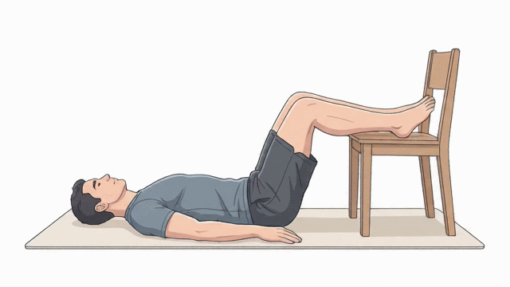
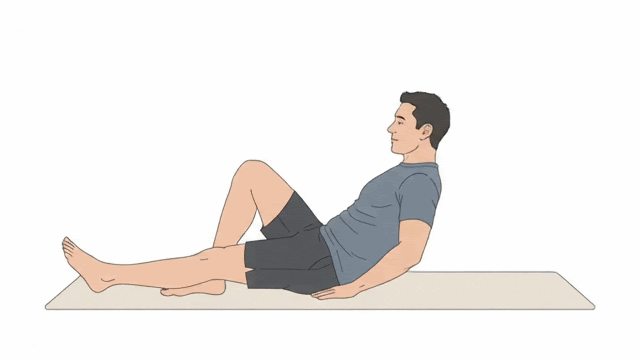
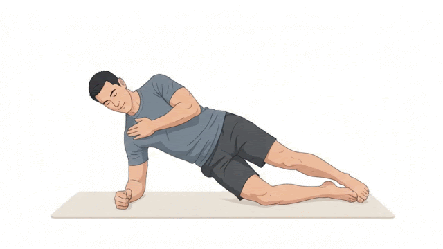
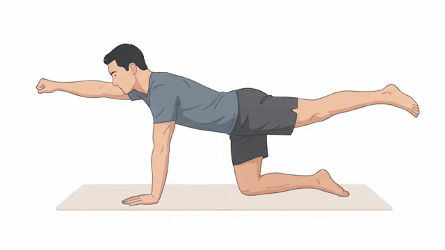

Rutina en casa · 10 a 15 minutos · Audio terapéutico integrado
Guía de Estabilización Lumbar
Protocolo de fortalecimiento del core profundo (McGill Big 3 + descarga 90–90) adaptado para proteger el segmento L4–L5 en columnas con fusión L5–S1.
Regla de oro antes de empezar
No realices los ejercicios de fuerza durante una crisis aguda de ciática ni con dolor eléctrico al toser o estornudar. Durante la fase aguda usá únicamente la Posición de Descarga 90–90 acompañada de audio suave a volumen bajo. Una vez que ceda el dolor, iniciá la rutina de forma gradual: ningún ejercicio debe provocar puntadas, hormigueo ni dolor irradiado hacia la pierna.
Cronómetro isométrico
10 s
Progreso de la sesión de hoy
0 de 4 bloques completados0%
Reproductor de Audio Terapéutico (Volumen bajo recomendado)
Sin tema seleccionado
Cargá tus temas con "+ Agregar temas" o subilos a la carpeta audio/ en GitHub
0:000:00
Vol35%
Sonidos de alivio integrados (sin archivos)
Generados en tiempo real. Usá auriculares estéreo a volumen bajo para los pulsos binaurales.
Vol sonido
Estudio de Sonido Curativo · Creá tu propia mezcla
Combiná ritmos e instrumentos en vivo (100% offline) o copiá el prompt para generar un tema de estudio.
1. Elegí la base rítmica (redondeada, sin sobresaltos)
2. Sumá y balanceá los instrumentos
Cama armónica continua (base obligatoria de calma)
Anclaje somático grave y redondo
Acordes cálidos y espaciados
Arpegios orgánicos con toque blando
Melodía lenta en registro grave-medio
Manto suave de fondo para soltar tensión
Vol mezcla50%
Archivos en GitHub: Asegurate de tener los 4 GIFs en la raíz (descarga_90_90.gif, abdominal_modificado.gif, plancha_lateral.gif, perro_pajaro.gif) y los 5 audios dentro de la carpeta audio/. También podés cargar temas desde tu celular con el botón "+ Agregar temas".
Bloque 0 · Alivio y Descompresión
1
Posición de Descarga 90–90 (Psoas)
Descompresión lumbar y relajación de espasmos defensivos

Cargando imagen...
Paso a paso
Acostate boca arriba sobre una colchoneta firme o manta en el piso.
Apoyá ambas pantorrillas sobre el asiento de una silla firme o sillón bajo, formando un ángulo aproximado de 90° en caderas y rodillas.
Dejá los brazos relajados a los costados con las palmas hacia arriba y respirá lento hacia el abdomen.
Para levantarte, rodá primero de costado y empujate con los brazos sin hacer fuerza abdominal brusca.
Claves para cuidar L4–L5
Quita la tensión del psoas y reduce al mínimo la presión intradiscal.
Ideal al final de la jornada laboral o tras varias horas sentado.
Es el único bloque seguro incluso durante días de molestia aguda.
Dosis: 5 a 10 minutos · respiración nasal lenta
Bloque Principal · Estabilización del Core (McGill Big 3)
2
Abdominal Modificado (McGill Curl-Up)
Activa la pared abdominal anterior manteniendo la zona lumbar neutra

Cargando imagen...
Paso a paso
Acostate boca arriba con una pierna estirada y la otra rodilla flexionada con el pie apoyado.
Colocá ambas manos planas debajo del arco natural de tu zona lumbar para evitar que la espalda se aplane.
Despegá apenas los codos del piso y activá suavemente el abdomen (como si te prepararas para recibir un golpecito).
Levantá la cabeza y la parte superior de los omóplatos solo unos pocos centímetros en bloque, sin llevar el mentón al pecho.
Mantené 10 segundos respirando corto y bajá controlado. Alterná la pierna flexionada a mitad de serie.
Claves para cuidar L4–L5
No hagas un abdominal clásico: el movimiento es mínimo, la espalda baja no se dobla.
Si te molesta el cuello, apoyá la lengua contra el paladar detrás de los dientes superiores.
Exhalá suavemente sin aguantar la respiración (evitá maniobra de Valsalva).
Fortalece oblicuos y cuadrado lumbar sin compresión excesiva

Cargando imagen...
Paso a paso
Acostate de costado apoyando el antebrazo, con el codo exactamente debajo del hombro.
Flexioná ambas rodillas a 90° hacia atrás, manteniendo muslos, pelvis y tronco en una misma línea.
Apoyá la mano libre sobre el hombro contrario y activá suavemente el abdomen y los glúteos.
Empujá la cadera hacia adelante y arriba hasta despegarla del piso formando una línea recta desde las rodillas hasta los hombros.
Sostené 10 segundos, bajá controlado y repetí de ambos lados.
Claves para cuidar L4–L5
No dejes que la cadera caiga hacia atrás ni que el torso rote hacia el piso.
Empujá el piso con el antebrazo para no "colgarte" del hombro.
Trabajá siempre ambos lados por igual para equilibrar la pelvis.
Dosis inicial: 4 – 3 – 2 reps × 10 seg por lado
4
Perro-Pájaro (Bird-Dog)
Estabilidad de espalda baja, glúteos y control antirrotación

Cargando imagen...
Paso a paso
Colocate en cuatro apoyos: manos debajo de los hombros y rodillas debajo de las caderas, con la espalda plana.
Activá suavemente el abdomen imaginando que tenés un vaso de agua sobre la espalda baja.
Extendé el brazo derecho hacia adelante (puño cerrado suave) y la pierna izquierda hacia atrás empujando con el talón, sin subir la pierna por encima de la línea de la cadera.
Sostené 10 segundos manteniendo la pelvis completamente nivelada.
Volvé despacio a cuatro apoyos y cambiá de lado.
Claves para cuidar L4–L5
Error más común: levantar demasiado la pierna y arquear la cintura. Pensá en "alargar", no en "subir".
Si cuesta mantener el equilibrio al principio, hacelo deslizando solo una pierna por vez antes de sumar el brazo.
Mantené la mirada hacia la colchoneta para no tensar las cervicales.